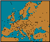

|
Answering the Big Puzzle |
|
Holmes took up a position at the Diplomacy table, pointing,
as he spoke, to the various provinces and units mentioned. I
record here only his words.
"Your Lordship, Dr Watson, let me proceed logically bit by bit and see how many of the initial 22 units I can account for. "We know, first, that inland home supply centers must begin the game with an army, since (by the rules) fleets cannot be placed there. This fact determines the placement of six armies -- Army Paris, Army Munich, Army Warsaw, Army Moscow, Army Vienna, and Army Budapest -- and we have six of the 22 units accounted for. "We also know the initial position of the Austrian fleet, as I pointed out earlier, since Austria has no coastal SC besides Trieste in which to put his fleet. Allow me to place Fleet Trieste on the board. 7 down, 15 to go. "Russia, as Dr Watson was so good as to remark, has two fleets and two coastal SCs. What the good Doctor missed is that St Petersburg has two coasts, so the exact initial placement of the northern fleet is uncertain. But the Russian must begin with Fleet Sevastopol. Eight down. "From our reasoning in determining just how France and Austria came to be eliminated, we know Italy's (and the rest of France's) initial setups -- Italy's as in the Standard game (with Fleet Naples, Army Venice, and Army Rome), France's being Fleet Marseilles, Army Brest, and Army Paris. (We already knew about the army in Paris.) Thirteen initial placements determined! "We know that Turkey captured Trieste, and that he did so by a convoy using his own fleet. By this, we can conclude that the Turkish fleet did not begin the game in its usual location at Ankara, and thus that one of the Turkish armies was placed there. With Army Ankara, we now have the initial position of fourteen units determined. But Turkey, we now are told, is unable to build in 1901 despite the capture of Trieste. So either all his home supply centers are occupied, or he had no net gain of centers in the year. Now it is impossible for more than one Turkish home SC to have been captured -- the only foreign units 'in range' and unaccounted for being the Russian Sevastopol fleet and Moscow army (of course, we know the Austrian Budapest army didn't convoy in, since Austria was eliminated); but if the Moscow army took a Turkish SC, the Russian fleet had to have convoyed it, because the Turkish fleet (the only other possibility for a convoy in that part of the world) is engaged in convoying a Turkish army to Trieste. So there is at most one foreign unit in Turkey, and at least two of the Turkish units departed Turkey -- the army to Trieste and the fleet out to sea for convoy duty. So we know that Turkey did have a home SC open in which he could build -- which means, given his inability to build, that Turkey had no net gain of SCs. His gain of Trieste must have been offset by his loss (definitely to Russia) of either Ankara or Constantinople; and Turkey certainly captured no other SC besides Trieste. Hold this thought. "Russia captured either Budapest or Vienna from Warsaw (Italy capturing the other from Venice) -- we know this because the only other non-Austrian unit that could reach Vienna or Budapest is the German army from Munich, which (we know) captured Paris. And we just determined that Russia captured a Turkish home SC. So Russia owned at least two non-Russian SCs at the end of 1901. "But Russia also was unable to build in 1901, and a home SC was certainly open. (Moscow is utterly out of foreign range in 1901; Sevastopol is in range from either Austria or Turkey, but Austria was eliminated and we know Turkey had no net SC gain, so we know neither Moscow nor Sevastopol was captured. Furthermore, we know that neither of the Russian units that began at Warsaw or St Petersburg ended the year either at Moscow or Sevastopol to cover those centers to prevent a build there -- the St Petersburg fleet can't have moved inland, and the Warsaw army, we know, moved into Austria. And one or the other of the two units that began in Moscow and Sevastopol ended the year in a Turkish SC -- all of which means that at least one Russian home SC was open.) We conclude that Russia, like Turkey, had no net SC gain in 1901, in spite of having taken both an Austrian and a Turkish home SC; which means that Russia must have lost the only other two SCs he owned -- Warsaw and St Petersburg! "It is simple to see how Warsaw must have been lost -- Berlin went there. No other foreign unit is within range (except the Austrians, and they were eliminated). So Germany began with Army Berlin and, consequently, Fleet Kiel, and we have deduced initial placements for sixteen units. "But how was St Petersburg captured? By convoy, certainly, but from where? The German fleet in Kiel could have moved into the Baltic Sea in the Spring, and the St Petersburg fleet into the Gulf of Bothnia -- but there's no army anywhere around for them to carry into St Petersburg. (Munich went to Paris, remember, and Berlin to Warsaw.) So the convoy into St Petersburg must have been a northern one, through (at least) the Norwegian Sea and the Barents Sea, involving units beginning the year (respectively) as Fleet Edinburgh and Fleet St Petersburg (north coast). Two more initial placements known -- our total is now eighteen! "The army that convoyed to St Petersburg must have been the English one. (The only other armies unaccounted for are French, and France was eliminated.) Which leaves only the second English fleet as the unit that took Brest; which in turn means that this second English fleet began as Fleet London, since it couldn't have reached Brest from Liverpool in two moves. The English army, then, had to begin as Army Liverpool. (We also know this from the fact that Liverpool is the only starting location from which an English army could setup to convoy in Fall 1901 through the Norwegian Sea.) Twenty known; two still uncertain. "In fact, the only initial placements not known are those of the Turkish units which set up on the Mediterranean coast -- one a fleet and the other an army. But consider -- we're told that three neutrals were occupied on the Spring move. Which units did the occupying? "Not the St Petersburg fleet by a move to Norway -- we know it moved to the Barents Sea. Not Marseilles by occupying Spain -- it moved to the Gulf of Lyon. Not Sevastopol moving to Rumania -- it moved either to the Black Sea or to Armenia, which we know because it was involved in capturing a Turkish home SC in the Fall. There are only three remaining units that could possibly have occupied a neutral in the Spring -- the Kiel fleet, moving to Denmark or Holland; the Budapest army, moving to Serbia or Rumania; and a Turkish unit in Constantinople, moving to Bulgaria. "But we know this Turkish unit from Constantinople was not the fleet, since the Turkish fleet moved in Spring into either the Aegean Sea or the Eastern Mediterranean, there to convoy an army to Trieste in the Fall. So Turkey began the game with Army Constantinople (we don't know whether this is the army which convoyed to Trieste, or whether it moved back to Constantinople in the Fall -- these are the only two choices for this unit which cooperate in the requirement not to increase the Turkish supply center count), and Fleet Smyrna.  "The amazing fact is that exact initial placement of all 22 units is determinable from the information given!"
|
 Back to the puzzle....
Back to the puzzle....